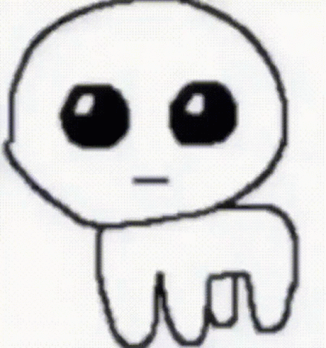

"That Guy" est. 2007

BTW I didn't draw the art above, I just found it somewhere on Google.
If you or someone you know made it, feel free to reach out so they can be credited.
This song on the other hand, is called "Tom Tom" and is made by a band called Holy F-word that I dare not say.
More uncredited art/GIF, so whoever made this reach out for credit.
Took me a bit longer than I'd hoped it to but I guess it's a lot more personalized now.
Now that I think about it, I'll link the video that the background music came from below:
Tom Tom Music Video